Laboratório 05 - Codificação de Imagem com DWT
Resultados integrante Luisa
I. Resultados removendo os três coeficientes
a) Codificação de Luminância (P&B) com DWT
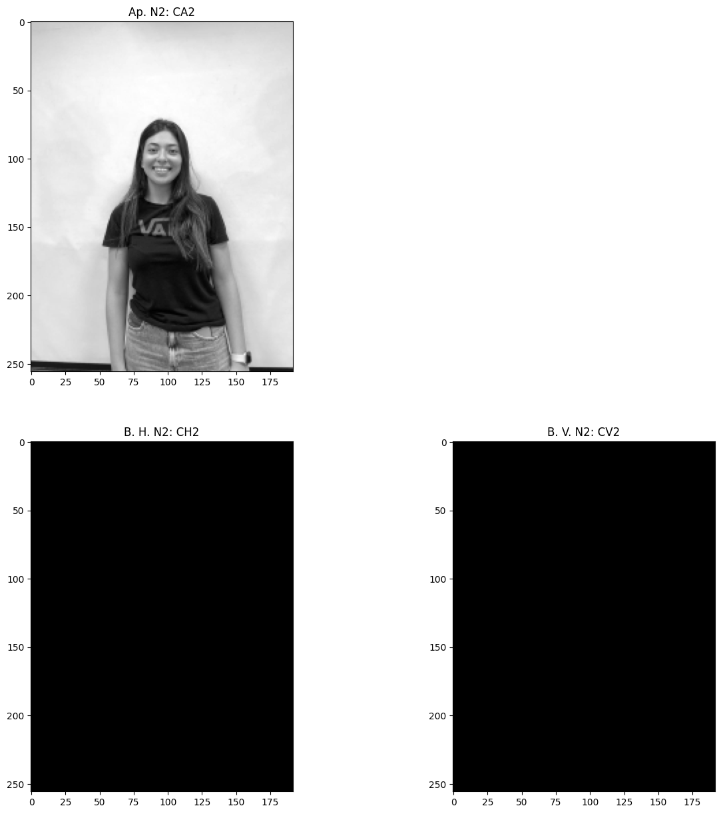
b) Cálculo do Erro Quadrático Médio (MSE) e da Relação Sinal Ruído de Pico (PSNR)
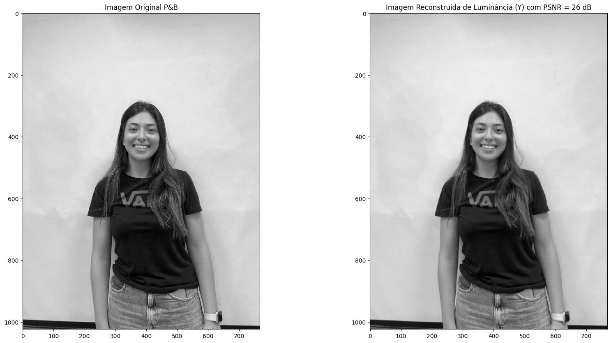
c) Teste das Funções de Multiresolução wavedec2() e waverec2()
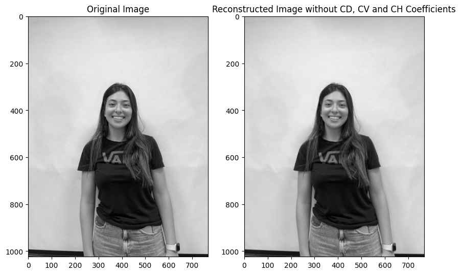
d) "Montagem" com wavedec2() e wavedecn()
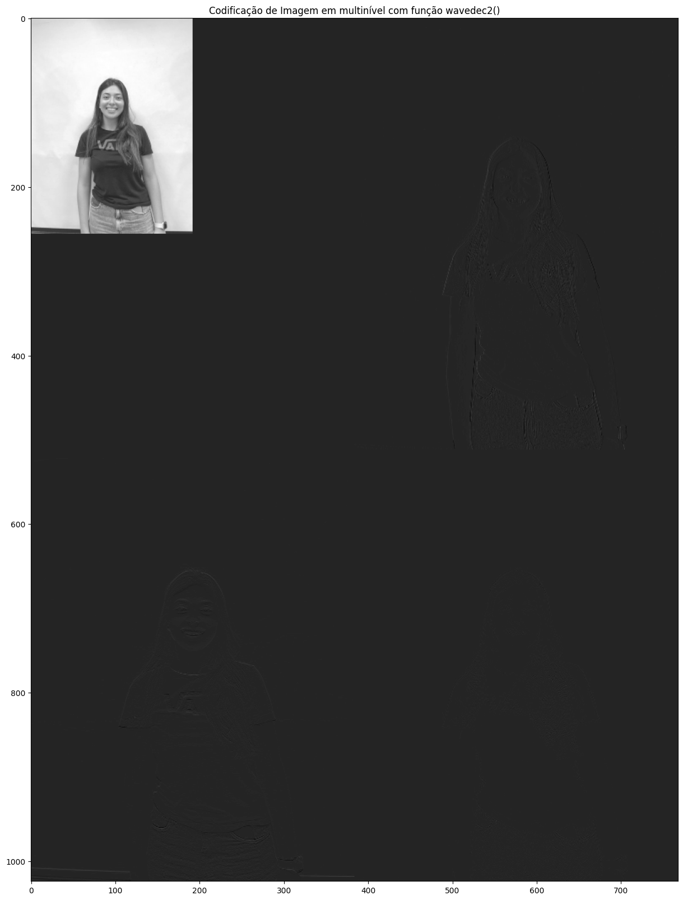
e) Reconstrução de Imagem Colorida
I. Plano Vermelho
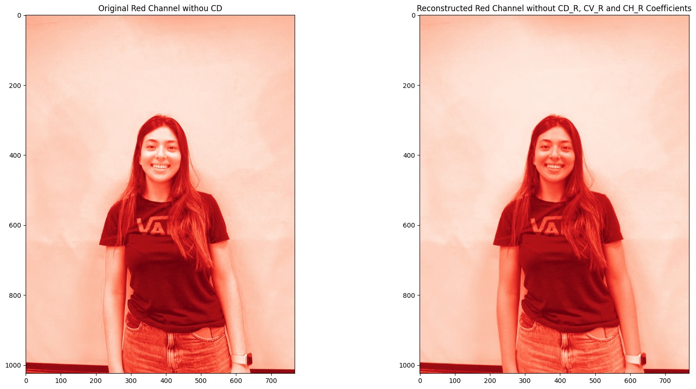

II. Plano Verde
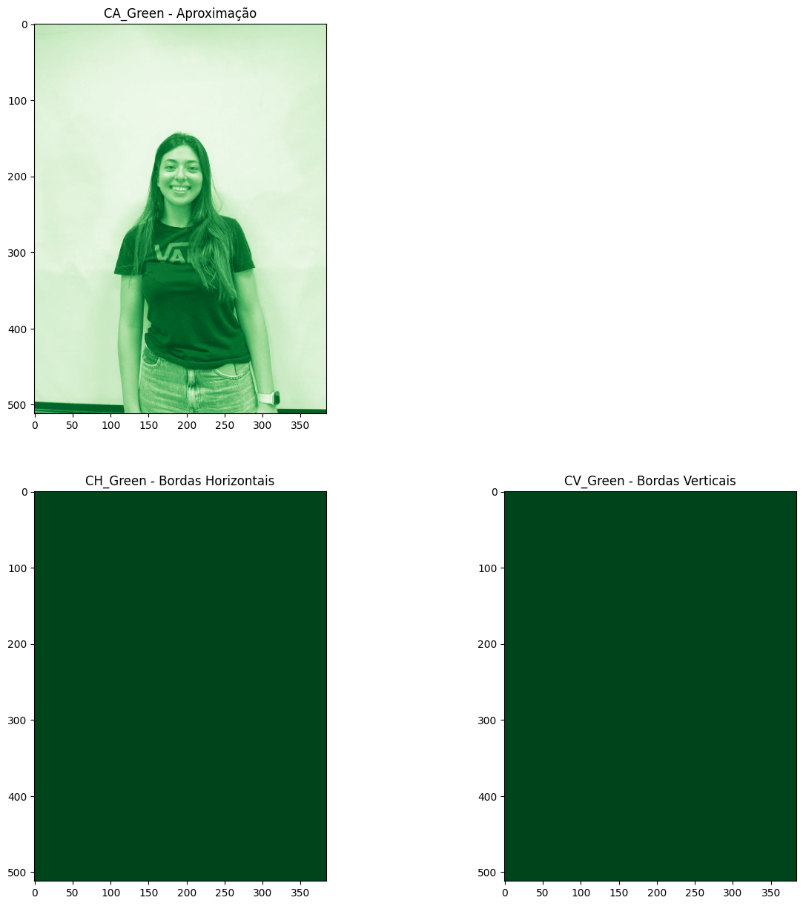
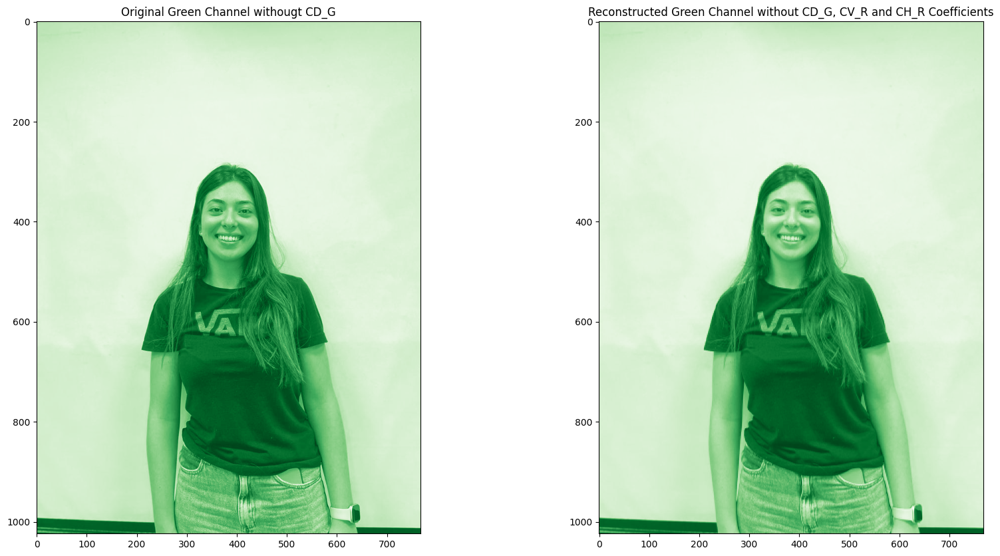
III. Plano Azul
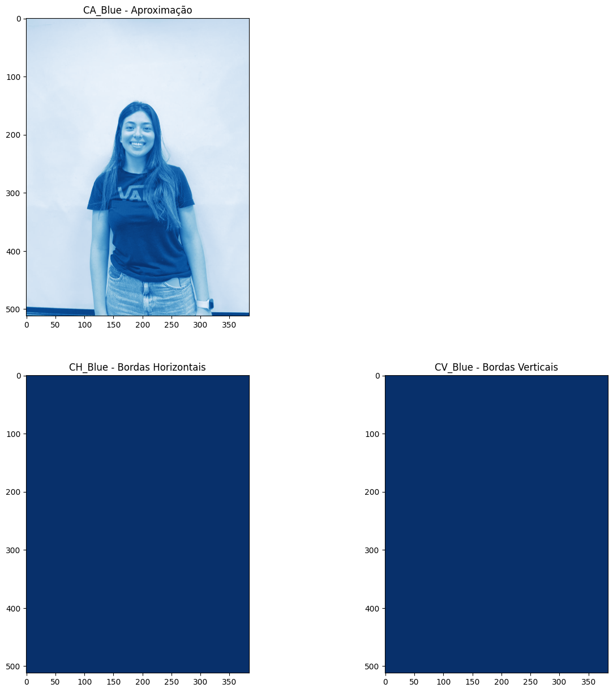
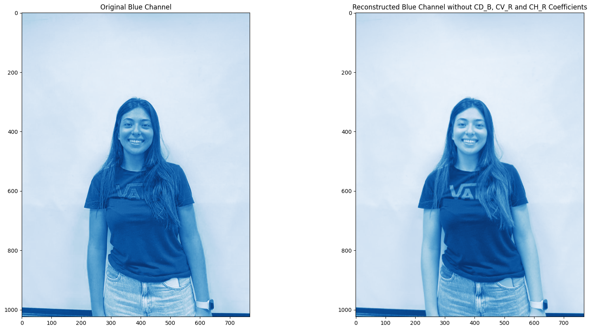
f) Reconstrução da Imagem colorida e Cálculo da MSE de cada plano de cor e da PSNR total
- MSE Plano Vermelho: 3.37e+04
- MSE Plano Verde: 1.95e+03
- MSE Plano Azul: 1.69e+04
- PSNR total = 0.92 dB
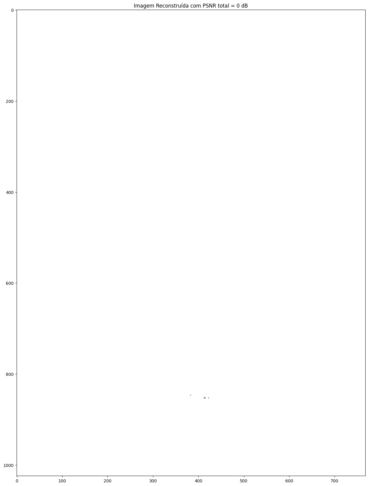
Tabelas
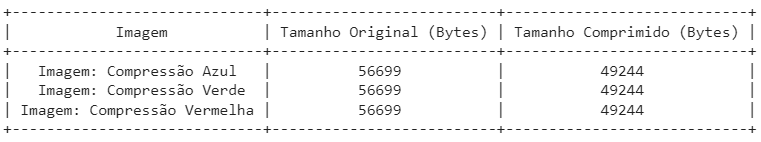
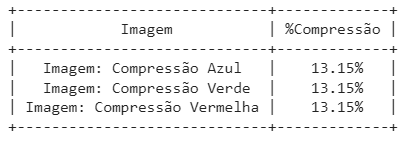

Notebook Python
Link para o notebook google collab - Sem CD: Notebook Ana
Link para o notebook google collab - Sem CD, CV, CH: Notebook Luisa
Link para o notebook google collab - LAB 05: Notebook Randre